A 300-square-metre apartment inside one of the most exclusive developments in Costa Adeje. Full-height glazed façade, high ceilings, three en-suite bedrooms, and a heated communal pool — a scale rarely available at El Duque. Un apartamento de 300 metros cuadrados dentro de una de las urbanizaciones más exclusivas de Costa Adeje. Fachada acristalada a toda altura, techos altos, tres dormitorios en suite y piscina climatizada — una superficie rara vez disponible en El Duque.
2.400.000 €
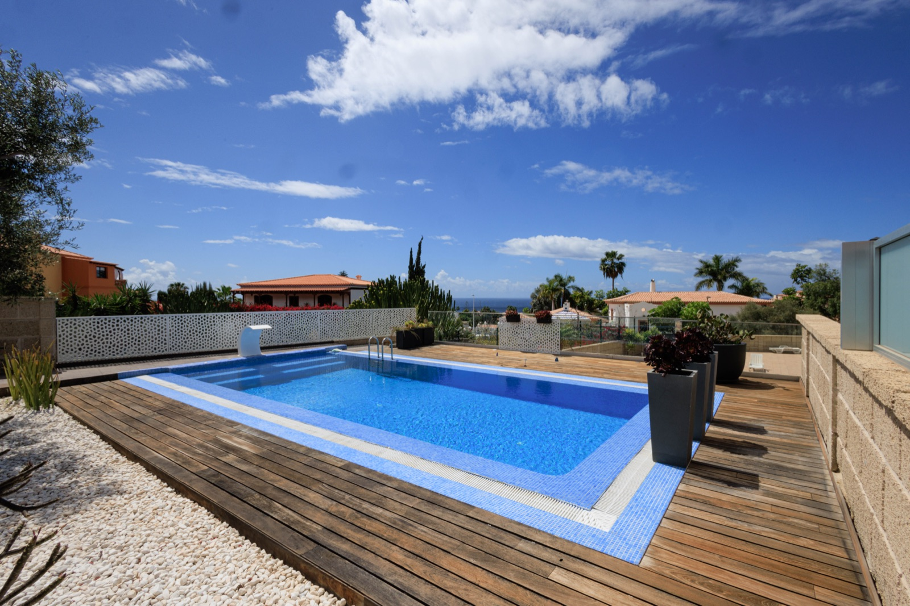
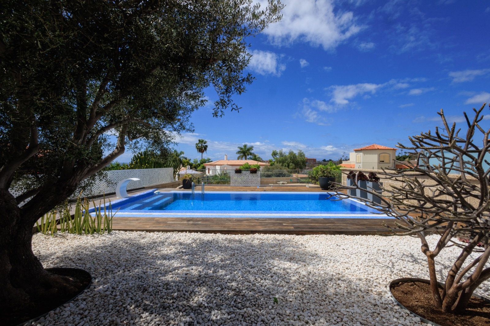
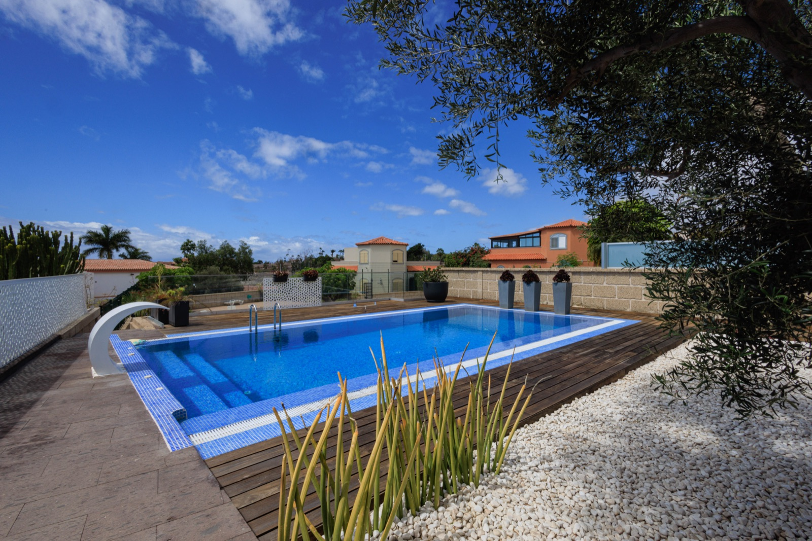
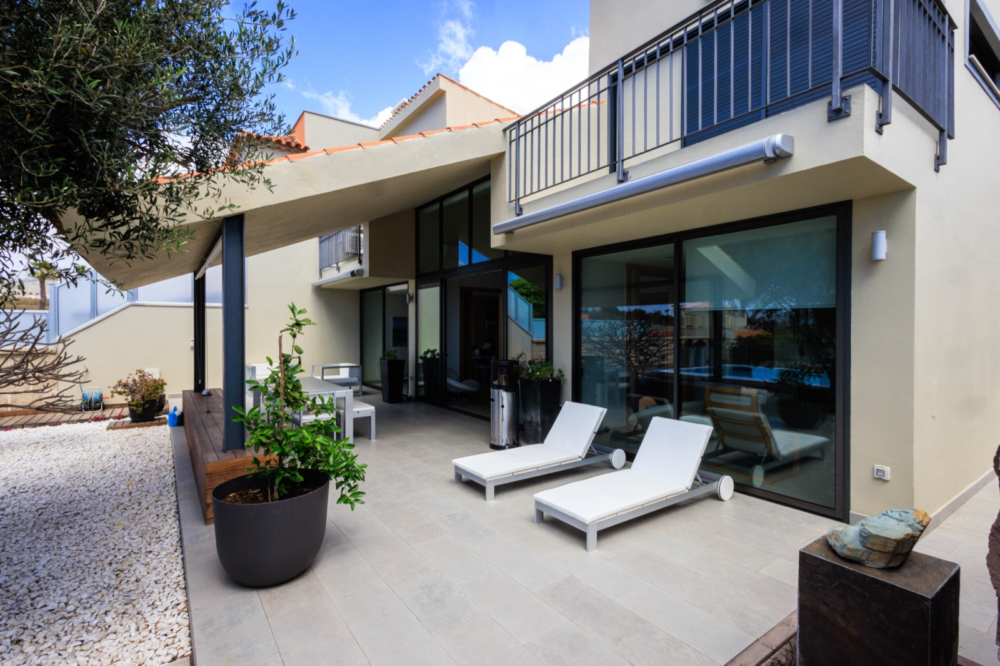
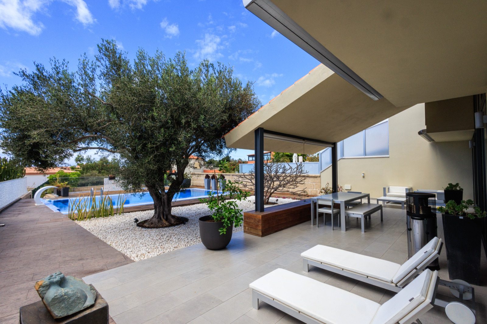
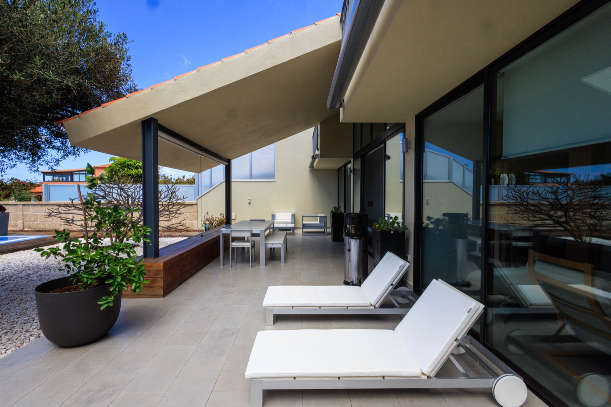
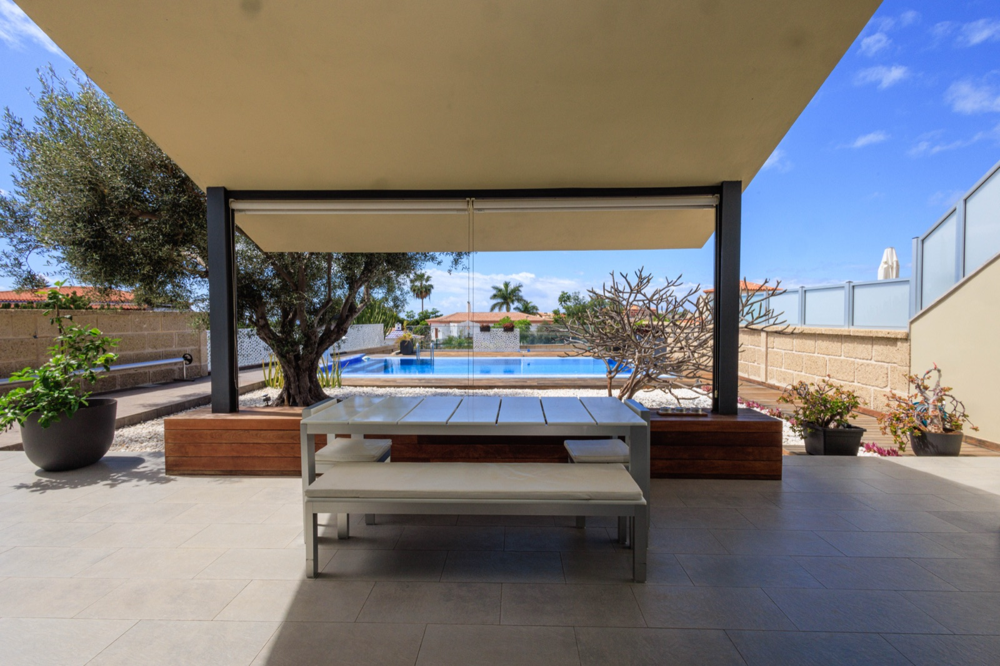
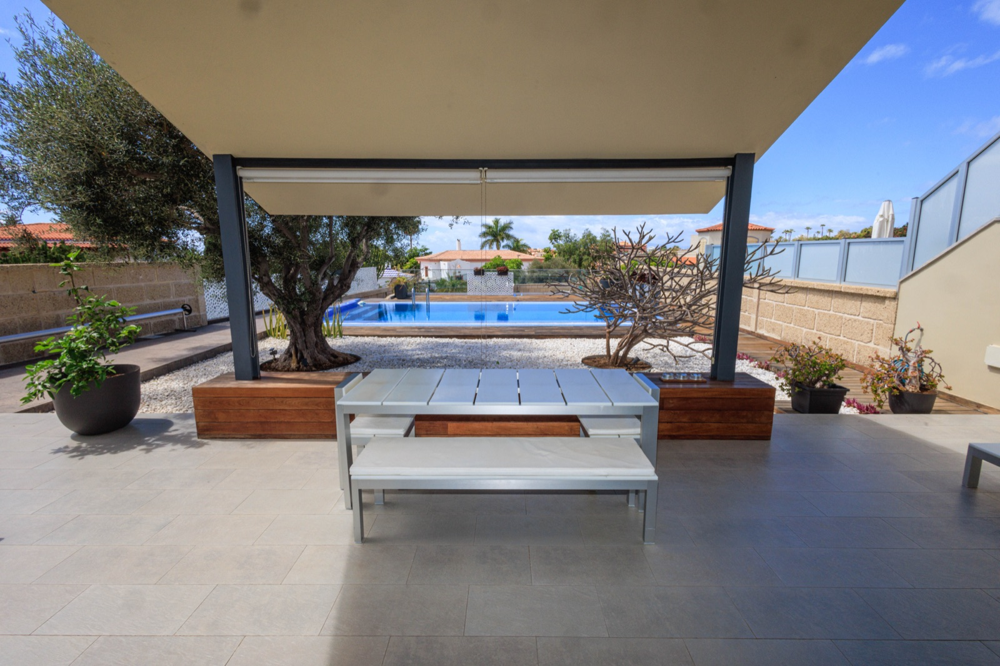
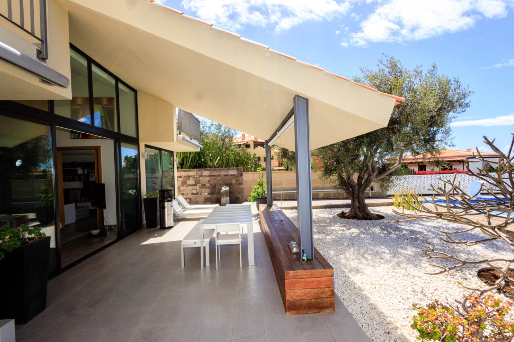
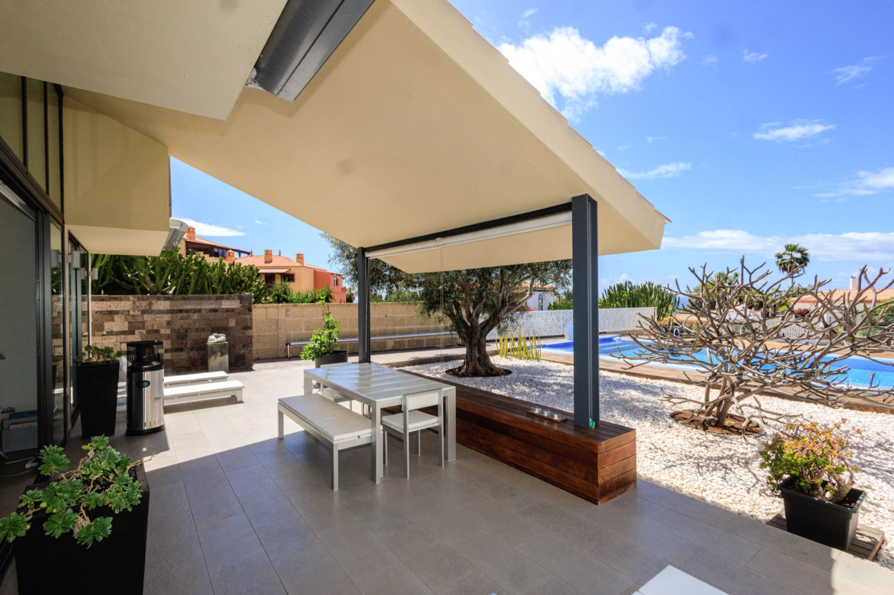
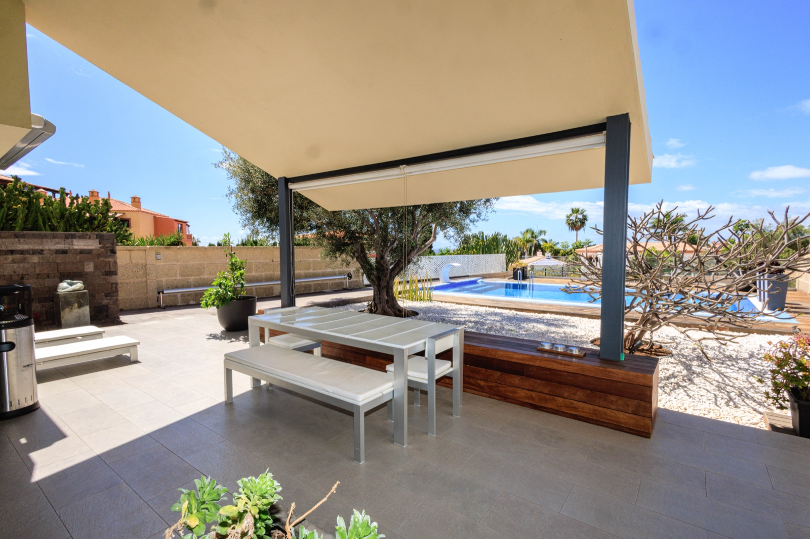
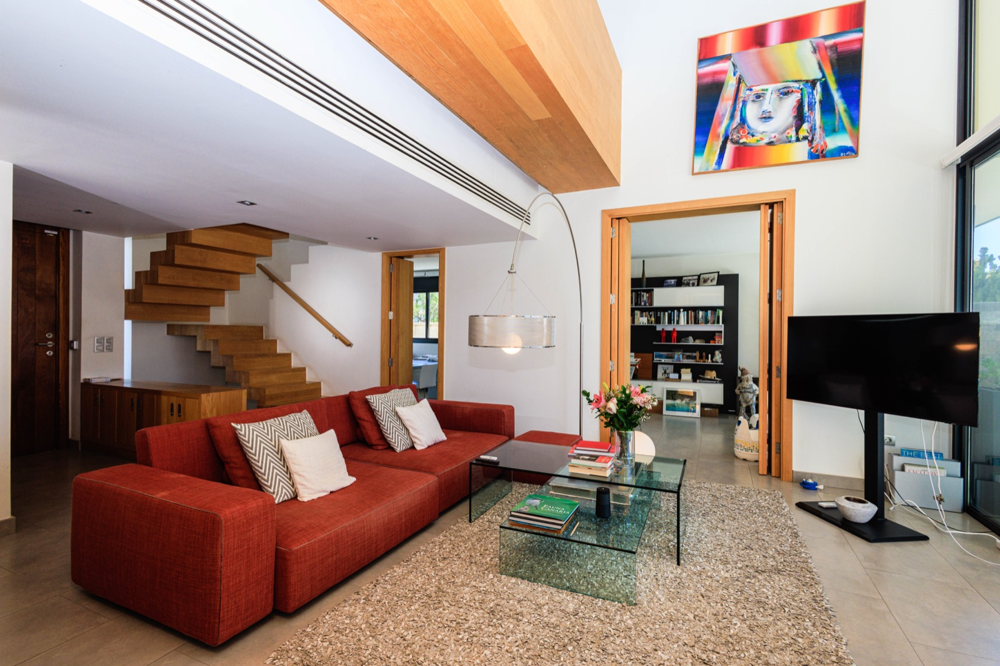
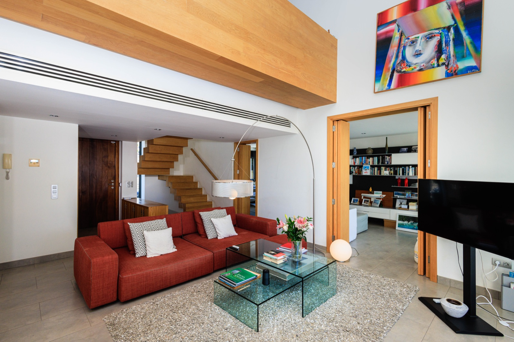
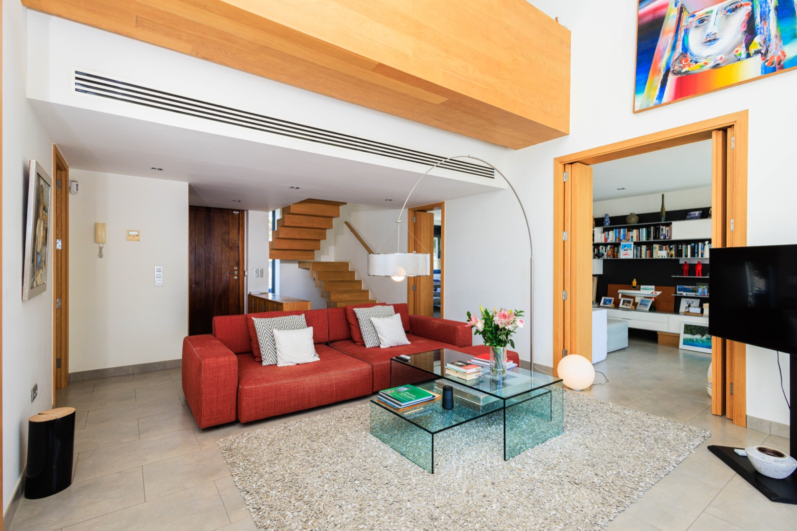
In the heart of Costa Adeje, inside the Joyas del Duque development, this 300 m² apartment is one of the larger residential propositions in South Tenerife. Three bedrooms, three bathrooms, a spatial plan built around natural light and a full-width glazed façade that opens onto an expansive gallery — the interior doesn't feel like an apartment at all.
Generous ceiling heights and fluid transitions between living, dining and kitchen. Materials specified at the highest level — bathroom finishes, kitchen detailing, integrated storage throughout. Cross-ventilation that works year-round in the Canarian climate.
The heated communal pool extends the usable season to twelve months. El Duque, Fañabé and Torviscas beaches are walking distance; Tenerife South airport is twenty minutes by car.
En el corazón de Costa Adeje, dentro de la urbanización Joyas del Duque, este apartamento de 300 m² es una de las propuestas residenciales más amplias del sur de Tenerife. Tres dormitorios, tres baños, una distribución pensada para maximizar la luz natural y una fachada acristalada a toda altura que se abre a una galería generosa — el interior no se comporta como un apartamento.
Techos altos, transiciones fluidas entre salón, comedor y cocina. Materiales de primera calidad — acabados de baño, detalle de cocina, almacenamiento integrado. Ventilación cruzada que funciona todo el año en el clima canario.
La piscina comunitaria climatizada extiende el uso a doce meses. Las playas de El Duque, Fañabé y Torviscas a pie; aeropuerto Tenerife Sur a veinte minutos en coche.
Private viewings of Joyas del Duque by appointment with Stazio. Two generations, one family, 45 years in South Tenerife. Visitas privadas a Joyas del Duque con cita previa con Stazio. Dos generaciones, una familia, 45 años en el sur de Tenerife.